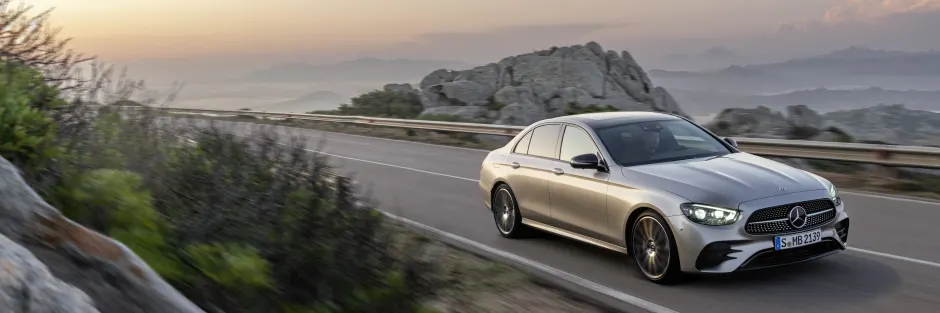

MERCEDES-BENZ CLASSE E : ÉVOLUTIONS ESTHÉTIQUES ET TECHNOLOGIQUES
Après 4 ans de bons et loyaux services, la Mercedes-Benz Classe E passe par la case restylage et celui-ci est plutôt conséquent. Que ce soit d’un point de vue esthétique ou technologique, la Mercedes Classe E évolue profondément. Les versions coupé et cabriolet seront dévoilées plus tard. Pour l'heure, découvrons ses déclinaisons berline et break !
UNE ÉVOLUTION ESTHÉTIQUE IMPORTANTE
sur le plan esthétique, les designers de la nouvelle Mercedes Classe E n’y sont pas allé avec le dos de la cuillère. Et pour cause, cette nouvelle Classe E n’a presque rien à voir avec celle qu’elle remplace, si ce n’est ses dimensions et son allure, toujours fidèles à la Classe E depuis 1993. Avec ce restylage, la Classe E reste toujours une berline luxueuse sobre et élégante.
Avec son nouveau design extérieur, la Classe E restylée s’intègre parfaitement dans la nouvelle gamme Mercedes.
Évolutions esthétiques à l’avant de la Nouvelle Classe E
Inaugurée sur la Mercedes Classe A et présente sur les derniers modèles Mercedes-Benz, la calandre de la Classe E est désormais inversée et apporte plus de prestance. L’intégration de la calandre est également plus subtile et travaillée.
Les phares changent entièrement de design et s’apparentent davantage à ceux que l’on retrouve sur la Classe B ou les SUV GLC et GLE, bien que la signature lumineuse soit inédite. Ces phares sont de série Full LED et les phares matriciels Full LED Multibeam sont bien évidemment disponibles en option.
Évolutions esthétiques à l’arrière de la Nouvelle Classe E
L’évolution majeure à l’arrière de la Classe E concerne les feux. Ceux-ci sont complètement redessinés et métamorphosent complètement l’arrière de la Classe E. Ils étaient auparavant verticaux et sont désormais horizontaux, à l’image de ce que l’on retrouve sur les modèles « coupé » de la gamme Mercedes. Cela dynamise fortement l’arrière qui profite d’une malle de coffre redessinée en conséquence.
MERCEDES CLASSE E : TOUJOURS DISPONIBLE EN COUPÉ, COUPÉ CABRIOLET ET BREAK
Mercedes Classe E Coupé
Mercedes Classe E Coupé Cabriolet
Mercedes Classe E Break

|
ÉVOLUTIONS DANS L’HABITACLE DE LA NOUVELLE CLASSE E
A l’exception d’un magnifique volant inédit dans la gamme Mercedes, l’habitacle de la Classe E reste fidèle à lui-même. Ce volant profite d’un dessin très moderne et sportif mais il est aussi technologique puisqu’il intègre une fonction capacitive pour faciliter la conduite semi-autonome.
L’habitacle de la Classe E reste encore pleinement dans l’air du temps et inspire le luxe. Nous retrouvons toujours la composition WideScreen typique des dernières Mercedes-Benz. WideScreen est composé de 2 écrans liés de 12,3 pouces (en option – 10,25 pouces de série) et ceux-ci profitent du système multimédia MBUX avec la célèbre commande vocale « Hey Mercedes ».